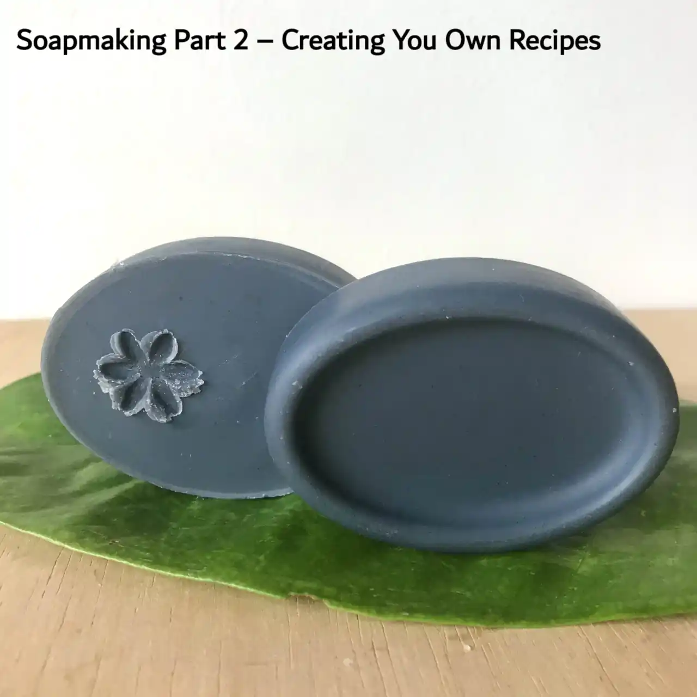

Creating You Own Soap Recipes | Part 2: Learn How to Make Natural Soap!

Welcome to Part 2 of our beginner’s guide to soapmaking series! Links to other parts of the series and for PDF download will be at the bottom of this page. Enjoy!
In this section we will teach you the basics of how to create safe recipes and recommend some online tools to make that process easier.
A little lye goes a long way! Any error in the amount of lye you use will either make the soap too alkaline or stop it from setting properly. Therefore, it is highly recommended that you make your own recipes or to at least check over other people’s recipes before using them.
Saponification Values
Each oil and butter has a SAP range that can be calculated into two different SAP values — one for NaOH and one for KOH. There are many charts of SAP values online. Please note that SAP range may be different for the same oil if from different brands. The best practise is to acquire the accurate SAP range/value from the manufacturer.
With the SAP range, you can then calculate the SAP values like so:
Solid Soap (NaOH) SAP value (round up to 0.001 decimal point) = average value of SAP range ÷ 1402.50
Liquid soap (KOH) SAP value (round up to 0.001 decimal point) = average value of SAP range ÷ 1000
With the SAP value in hand, you can then use the following formula to calculate exactly how much lye is needed to saponify the amount of oils in the recipe:
oil weight (grams) x SAP value = lye needed (grams) (round to 0.001 decimal point)
Oils and Butters for Soapmaking
Which Oil & Butter?
Choosing which oil and butter you use to make soap will drastically change the properties of the bar in its hardness, lather, cleansing power, conditioning ability and shelf life. This is because each oil and butter has its own fatty acid profile. There are many formulas out there and each soaper has their own preferences. Read more about properties of oils in soapmaking.
For your first batch, we recommend making a single oil soap. This is an uncomplicated way to start your soapmaking journey and you do not have to invest in many different oils. We think 100% coconut oil soap (with 20% superfat) and 100% olive oil soap (or also known as castile soap) are two good starting points. Examples of single oil soaps: 100% olive oil soap and 100% coconut oil soap.
Superfat = Lye Discount
Adding superfat in your recipe is vital in guaranteeing a safe soap. For ease of calculation, superfat is included in recipes as a lye discount. Meaning, instead of increasing the amount of oils you use, you decrease the amount of lye you use:
5% superfat = 100% of lye - 5% lye = 95% lye (round to 0.001 decimal point)
Supetfat/lye discount is also a great way to fine-tune the properties you want in a soap:
less superfat = a more cleansing soap
more superfat = a more moisturising soap
The default superfat value is 5%, but the optimal value will depend on the recipe you use and personal preferences. For example, a 100% coconut oil soap is very cleansing so a 20% superfat is often used. You can also experiment with adding different oils as superfat, especially oils that make up for the shortcomings of the recipe. For instance, shea butter (very moisturising) as superfatting oil in a coconut oil soap.
Water in Soapmaking
To thoroughly dissolve all lye crystals, you must use the same amount or more water than lye in weight. But how much more water you add to the recipe is for you to decide. For cold-process soaps, the amount of water used ranges from 3 water : 1 lye and 1 water : 1 lye. There is the concept of ‘full water’ in soapmaking and any recipes using less than full water are called having a ‘water discount’. However, this concept can be inaccurate and inconsistent. It is best to calculate water in your recipes using the water:lye ratio method. Read more about water in soapmaking.
Finding the perfect water amount in your recipe will take time. You also have to take into account the environment you are in. We make soaps in a hot and humid climate, when we first made 100% coconut oil soap with 20% superfat, a 2:1 water:NaOH ratio resulted in sticky soaps that are difficult to unmould and a 1.5:1 ratio resulted in hard non-sticky bars that came out of the mould in 24 hours after pouring. This is because less water in a recipe results in harder bars of soap with less moisture, which compensated for the high humidity. If you are having problems with sticky or brittle soaps, adjusting the water:lye ratio may solve your problem.
Note: water is a carrier of heat, high water content in soap may result in bubbling or even ‘volcano’. Please proceed with care.
Optional Additives
Chelator - Citric acid
Citric acid is an optional but good addition in a soap recipe as it helps counter hard water issues such as soap scum and it increase shelf life of soaps:
1-2% of citric acid of total oil weight is a good amount to add
(dissolve citric acid in water equal to its weight to add to lye solution)
As an acid, it will neutralise some of the lye in a recipe so we will need to add more lye to balance that out:
Lye for citric acid (grams) = Citric acid weight in grams X 0.624
Total lye needed in a recipe (grams) = Lye for citric acid + Lye for saponification of oil(s)
Natural Additives
You can include some additives in your recipe to give soaps colour and fragrance. They are easily added when soap reaches emulsion. Take some batter out into a small container and add the additive then whisk to get rid of lumps.
| Natural Additive | How Much to Add |
| Turmeric | (adds colour and scent) from 0.5% of total oil weight for light brown colour to 5% of total oil weight or more for a dark brown colour or anywhere in between. Picture of soap with turmeric @ 1.5%. |
|---|---|
| Clays | (adds colour and provides exfoliating properties and more) around 1-2% of total oil weight depending on personal desires |
| Activated Charcoal | (adds a grey to deep black colour) as little as 0.05% of total oil weight will give grey colour. Picture of 0.2% charcoal in soap. |
| Infused Oil | (infuse spices and herbs in soaping oil for colour and scents) depends on personal preferences |
| And many more! | |
{kind=link}
{kind=link}
- Colouring soap naturally (extensive guide)
- Visual Guide to using clay in soapmaking
Essential Oils
Essential oils are a natural way to give fragrances to your soaps. It is an art in itself to create blends of oils with deep complexity and brings on various moods and atmospheres. It is important to note that essential oils are concentrated and very powerful. There is a safety aspect to how much to use when making soap for a non-irritating product. Please refer to the following websites and conduct your own research:
Note on additives: additives high in sugar such as fruit purees tend to increase the soap’s temperature during saponification and lead to ‘volcanoes’. Please proceed with care!
Masterbatching Lye
(recommended for frequent soapers)
To reduce the times you come into contact with lye crystals (therefore fumes) and to reduce overall waiting time for lye to cool down during soaping, you can prepare lye and water solution in advance — called masterbatching. Please read on this page for containers safe for lye storage.
Ratio of water:lye for masterbatch depends on your use case. We prefer to soap at 1.5:1 water:NaOH ratio and we do not add other liquids other than water, therefore our masterbatch ratio is 1.5:1. When we make soap, no extra water is added, the total weight of masterbatch solution we use is:
Lye (with discount/superfat) + water (@ 1.5:1 water:lye ratio) = masterbatch solution needed
If you plan on adding other liquids or are unsure of the exact water:lye ratio to use when soaping, you can make a masterbatch at 1:1 ratio. Any liquid or water to add can always be added in later but it would not be wise to add more lye to an already made masterbatch as it may have issues dissolving properly.
Note: citric acid does not dissolve well in lye water solution so always dissolve citric acid in water (equal to its weight) if you use masterbatch solution.
Sample Soap Recipe Chart

Click to download the spreadsheet for this sample soap recipe chart:
(it is in the OpenDocument Spreadsheet format – a free and open source format that can be opened with Microsoft Excel and Google Sheets or consider using free software like LibreOffice on PC or Collabora Office on mobile)
Total batch weight can be helpful in figuring out how big of a mould you need. In our experience:
Weight of water to fill mould x 0.7 = weight of oils & butters needed in grams
Weight of water to fill mould ÷ 0.9 = estimated total batch weight required for mould in grams
Online tools for soap recipes
An online lye calculator can help you double check your maths, we like to use Sopamaking Friend.
The following are two video playlists about soapmaking that may be of help to you:
- Playlist of introduction to soapmaking by Elly’s Everyday Soap Making
- Playlist of How to & why (techniques and tips) of soapmaking by I Dream In Soap
Soapmaking Pouring Techniques
You can be very creative in soapmaking! There are many techniques to create different patterns, to name a few: Taiwan Swirls, In the Pot Swirl, Drop Swirl, hanger swirl, Ombre, Kaleidescope, Confetti (using soap scraps)…
Here is a photo of a swirl we did (check out recipe for this soap):

- Amazing soapmaking techniques by Oh我的雙牛寶貝兒/Yvonne
- Inspirational soap making techniques by Holly’s Soapmaking – Kapia Mera
Thank you for reading! Hope you learned something new!
Check out all the posts in our soapmaking for beginner’s guide: